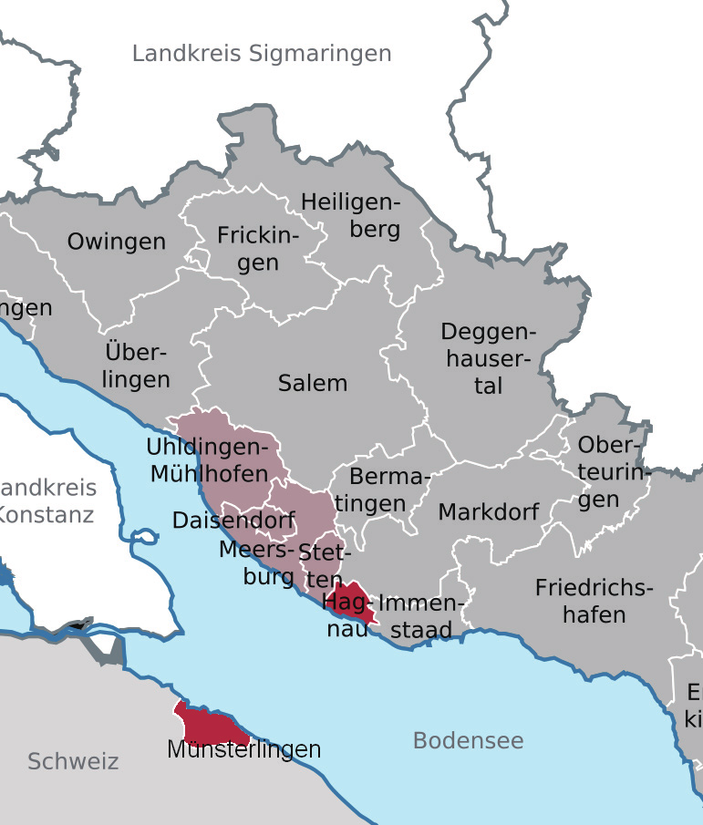
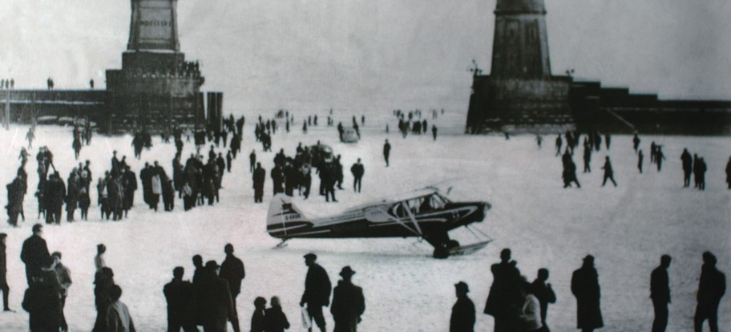
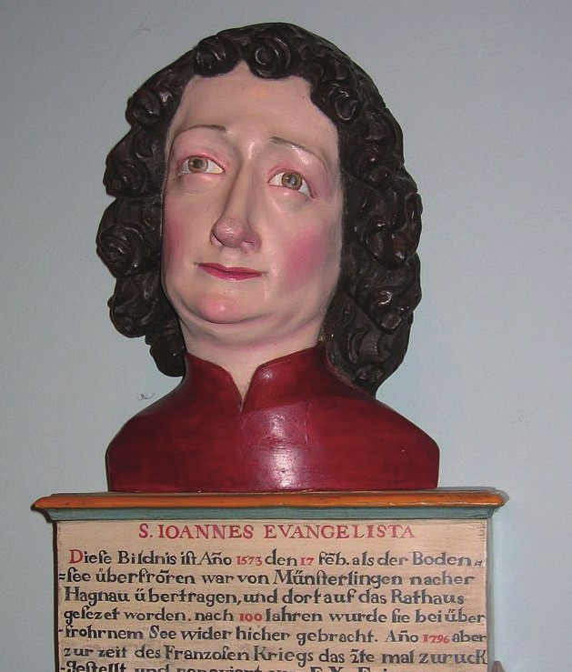
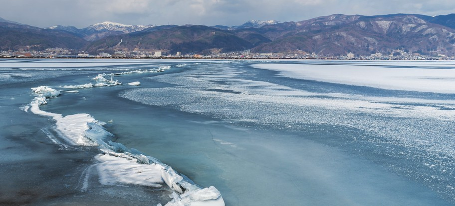
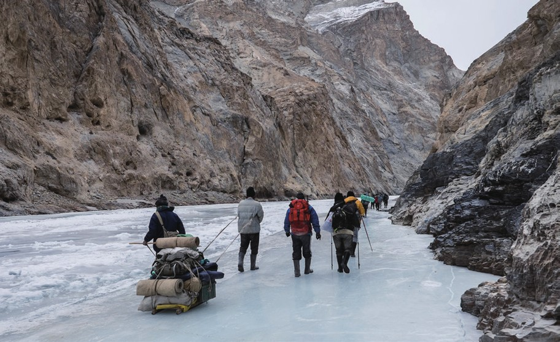
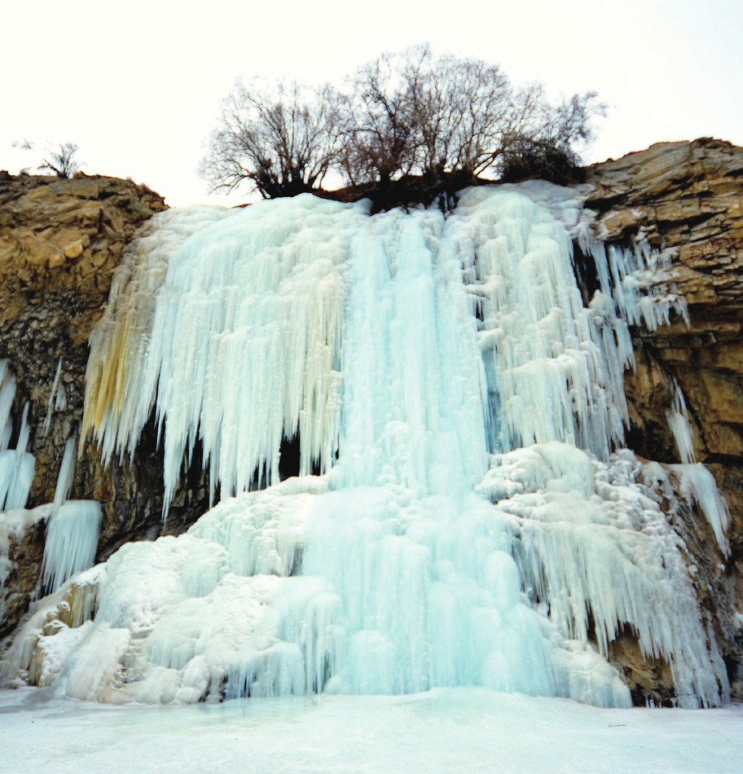

3줄 요약
- 보덴호가 얼면 독일과 스위스의 두 마을은 얼음 위를 걸어 세례 요한의 흉상을 옮겨 왔지만, 1963년 이후 호수는 얼지 않고 있다.
- 일본 스와호에 신들의 길 ‘오미와타리’가 나타나는 일도 기온 상승으로 크게 줄었고, 인도 잔스카르강의 얼음길 차다르 트렉도 막히고 있다.
- 얼음은 다시 얼 수 있지만, 얼음이 내준 길과 함께 이어온 문화와 전통은 한번 잃으면 되살리기 어렵다.
“렛 잇 고~♬” 디즈니 애니메이션 겨울왕국의 주인공 엘사는 평생 숨겨온 마법 능력이 사람들 앞에서 탄로 나자 충격에 휩싸인 채 아렌델을 황급히 뛰쳐나온다. 넓은 호수가 앞을 가로막고 있었지만, 엘사가 발을 내딛는 순간 호수는 얼음으로 변해 길을 터준다. 원래는 없던 길이다. 숨 막혔던 자기부정의 올가미를 벗어던지고, 진정한 나를 찾아 떠나는 길은 그렇게 꽁꽁 얼어붙은 호수 위에 새겨졌다. 얼어붙은 호수는 엘사를 자유로운 세상으로 데려다줬다. 그것은 얼음이 아니라 길이었다.
물이 겨울이 되면 얼고 봄이 되면 녹는 것은 마치 봄에 싹이 트고 가을에 단풍이 지는 것만큼이나 자연스러운 현상이지만, 호기심 많고 상상력 풍부한 호모 루덴스에게 얼어붙은 호수는 단순한 얼음이 아니다. 그것은 때때로 문화 예술적 ‘사건’이 되기도 한다! 배경처럼 바라보기만 했던 넓은 호수와 강이 마법의 ‘길’로 돌변하는 순간이기 때문이다. 발을 디뎌보고 싶고, 건너가 보고 싶고, 저편 어딘가 미지의 세상과 연결되고 싶은 인간의 본능적 충동을 자극하고야 만다. 어쩌면 빙 돌아 한나절 걸리는 여정을 순간에 주파해 버리는, 시공간을 주무르는 아찔한 초능력을 발휘할 찬스일지도!
1세례 요한은 보덴호를 다시 건널 수 있을까?

호수를 발로 걸어서 건너는 것이 엘사만의 특권은 아니다. 여기 수백, 수천 명의 사람들이 행렬을 이루어 얼어붙은 호수를 걸어서 건넌 기록이 있다. 독일, 스위스, 오스트리아에 걸쳐 있는 보덴호에 관한 이야기다.
지역 주민들이 ‘얼음 행렬’을 만들어 호수를 건넌 것은 단지 어디를 가기 위해서만은 아니었다. 그것은 호수가 갈라놓은 두 마을이 호수가 얼면서 다시 연결된 사건을 기념하기 위한 것이었다. 이는 충분히 대대손손 기념할 만한 사건이다. 왜냐하면 보덴호가 얼어붙는 일은 백 년에 한두 번 일어날 정도로 희귀하기 때문이다. 그래서 이 특별한 현상을 가리키는 용어도 따로 있다. 독일어로 ‘제그프뢰르네(seegfrörne)’는 호수가 얼어붙는 현상을 말한다. 9세기 말 교회 기록이 보관되기 시작한 때로부터 현재까지 모두 34번 발생했다고 한다.
보덴호에 제그프뢰르네가 발생하면 독일 쪽 연안과 건너편 스위스 쪽 연안에 있는 두 마을은 특별한 행사를 치른다. 이들은 언 호수를 건너가서 두 마을을 잇는 종교 문화적 상징물로서 세례 요한의 흉상을 주고받는다. 교환을 하는 것이 아니다. 정확히 말하면 하나의 흉상을 이쪽 마을에서 저쪽 마을로 옮기는 것이다. 옮겨진 흉상은 다음 제그프뢰르네가 발생할 때까지 한쪽 마을에서 보관한다. 제그프뢰르네의 경이로움을 기억하고, 또 언제가 될지 기약할 수 없지만 분명히 다시 찾아올 제그프뢰르네를 기다리는 특별한 방법이다.

두 마을이 세례 요한의 흉상을 주고받기 시작한 것은 1573년부터다. 기록에 따르면, 흉상은 가장 먼저 독일 쪽 연안 마을에서 스위스 쪽 마을로 옮겨졌다. 그리고 백여 년이 지난 1695년 세례 요한의 흉상은 다시 스위스 마을에서 독일 마을로 옮겨졌다. 그리고 몇 차례 더 옮겨진 끝에 현재는 스위스 쪽 마을에 보관돼 있다. 그러니까 보덴호의 제그프뢰르네는 단순한 자연현상을 넘어 수 세기에 걸쳐 지역의 정체성을 곱씹는 전통으로 자리 잡은 셈이다.
가장 최근에 보덴호가 언 건 1963년이었다. 그해 사람들은 마치 그날만을 기다렸다는 듯이 대거 얼음 행렬에 동참했다. 사진을 보면, 천 명이 넘는 사람들이 걸어서, 말을 타고, 심지어 폭스바겐 비틀을 타고 얼어붙은 호수 위를 가로질러서 독일에서 스위스로 세례 요한의 흉상을 옮기는 데 동참했다. 얼어붙은 보덴호는 모두가 신났던 축제의 현장이었다. 그러나 이제는 기후변화로 좀처럼 호수에 얼음이 얼 기미가 보이지 않으니, 수 세기 동안 두 마을을 이어온 길도, 연대감도, 전통도 모두 끊어질 위기다.

2남신 타케미나카타는 스와호를 다시 건널 수 있을까?
일본 나가노현의 스와호에는 겨울이 되면 때때로 ‘사랑의 길’이 열리곤 한다. 남신 타케미나카타가 이웃 마을에 사는 여신 야사카토메를 만나러 가는 길이다. 스와호에 사랑의 길이 나타나면 사람들은 이를 “오미와타리”라고 부른다. 신이 건넌 길이라는 의미다. 신들이 다니는 길인 만큼 평범한 얼음 길과는 다르다. 삐쭉삐쭉 날카롭게 깨진 얼음이 솟아난 길은 굽이굽이 불규칙하다. 마치 호수 얼음 아래에서 무언가 거대한 존재가 지나가면서 얼음판을 깨트린 것 같다. 동네 사람들의 말대로 ‘용의 등 비늘’인지도 모른다.

이렇게 평범하지 않은 얼음 길은 그저 춥기만 해서는 생기지 않는다. 날씨가 추웠다가 풀리기를 반복해야 모습을 드러낸다. 기온이 며칠 동안 영하 10도 이하로 떨어지면 스와호는 완전히 얼어붙는다. 그러다 날씨가 살짝 풀리면 두꺼운 얼음판이 깨지고, 깨진 얼음판들이 서로 충돌하면서 용의 등 비늘과 흡사한 들쭉날쭉한 얼음 길이 나타난다. 신들이 이동하는데 조용할 리 있겠는가. 오미와타리는 천둥 같은 굉음을 동반한다. 옛날 사람들은 오미와타리를 경외하면서도 두려워했다고 한다. 하늘을 가르는 천둥소리와 함께 용의 등 비늘이 불쑥 얼음판을 쪼개며 솟아나는 광경은 두려움을 자아낼 만했을 것이다.
한때는 매년 오미와타리를 볼 수 있었지만, 최근에는 지구 온도 상승으로 발생 빈도가 현격히 줄었다. 2019년에는 4년 만에 오미와타리가 발생했다. 스와호의 연간 기온은 지난 세기 동안 2.4도 상승했다. 기후변화가 신들의 사랑마저 방해하는 형국이다. 지역 주민들은 오미와타리를 신성시했다. 오미와타리는 지역 정체성의 중심으로서 모닥불처럼 사람들을 끌어모았다. 하지만 재만 남은 불 가에는 누구도 머무르지 않는 법이다. 스와 지역의 미래세대는 신들의 길을 영영 떠올리지 못할지도 모른다. 마을 주민들은 언제든 서로 사랑하는 신들이 다시 만나길 학수고대하고 있다.
3라다크의 산골 마을 주민들은 올해 잔스카르강을 건널 수 있을까?

인도 라다크의 잔스카르강(Zanskar River)은 겨울에만 길을 열어준다. 혹독한 겨울, 도로마저 끊기고 나면 세상에서 가장 외진 곳, 잔스카르의 산골 마을 주민들이 세상 밖으로 나올 수 있는 길은 이곳뿐이다. 차다르 트렉(Chadar Trek). 히말라야 고산지대를 흐르는 잔스카르강이 얼어붙어 만들어진 길이다. 험준한 산악 지형과 불안정한 얼음을 넘어야 하는 극한의 트렉이지만, 오랜 기간 이 길을 이용해 온 주민들은 물에 빠지지 않고 가는 방법을 잘 안다. 길을 가다 보면 티베트 불교 사원과 수도원도 만날 수 있다. 차다르 트렉은 생존의 길일 뿐 아니라, 종교와 믿음, 성찰, 인내, 극복, 사유의 길이기도 하다. 길은 하나로되 모두가 저마다의 서로 다른 길을 걷는 셈이다.
차다르 트렉에는 흥미로운 전설이 전해진다. 가뭄이 들자 한 성자가 물을 구하기 위해 길을 떠났다가, 물이 담긴 항아리와 두 마리의 물고기를 얻게 되었다. 단, 항아리를 어디에도 내려놓지 말라는 조건이 붙었는데, 성자는 돌아오는 길에 끝내 항아리를 내려놓고 말았다. 그러자 항아리에서 물고기 두 마리가 튀어나와 거대한 폭포를 만들었다는 이야기다. 이 폭포는 네락 폭포(Nerak Waterfall)를 가리키는데, 꽁꽁 얼어붙은 폭포수는 차다르 트렉의 가장 인상적인 경관을 제공한다.

차다르 트렉은 험난한 트레킹을 즐기는 모험가들에게도 인기 있는 명소다. 겨울철 차다르 트렉은 지역 커뮤니티를 먹여 살리는 길이다. 그런데 최근 잔스카르강의 얼음이 얼지 않아서 트레킹이 취소되는 일이 빈번히 발생하고 있다. 기후변화는 세상에서 가장 외진 곳, 잔스카르에도 예외 없이 찾아왔다. 트레커도 잔스카르 주민들도 건널 수 없게 길이 막혀버렸다.
4얼음과 함께 사라지다!
호수와 강의 얼음은 단순한 자연현상이 아니다. 그것들은 사람들에게 영감을 불어넣고 이야깃거리를 던지고 다른 세상을 상상하게 한다. 그러나 기후변화로 호수와 강이 더 이상 얼지 않게 되자, 얼음이 내준 길과 함께 그 모든 것이 사라질 위기다. 얼음은 있다가도 없는 것이지만, 우리의 문화와 전통은 한번 상실하면 다시 되살리기 어렵다. 스위스는 빙하를 보호하기 위해 빙하 위에 지오텍스타일(geotextile)이라는 하얀 이불을 덮어준다. 부모가 자는 아이에게 이불을 덮어주듯이 말이다. 그렇게 해서 세례 요한과 타케미나카타 신이 다시 호수를 건널 수 있다면 아닌 게 아니라 이불이라도 덮어주고 싶은 마음이다.